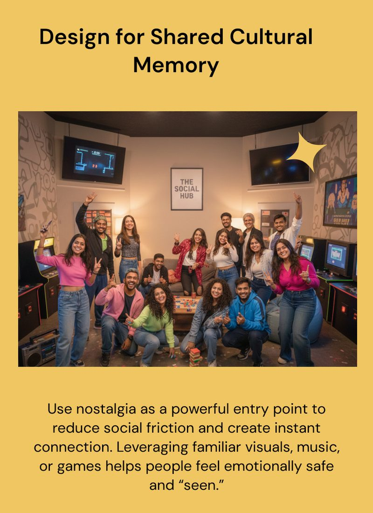
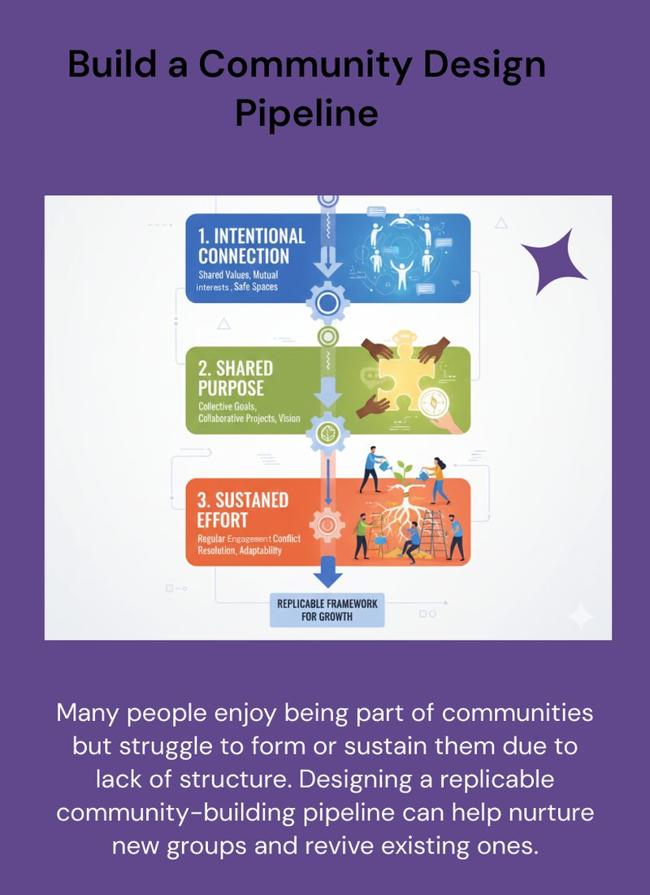
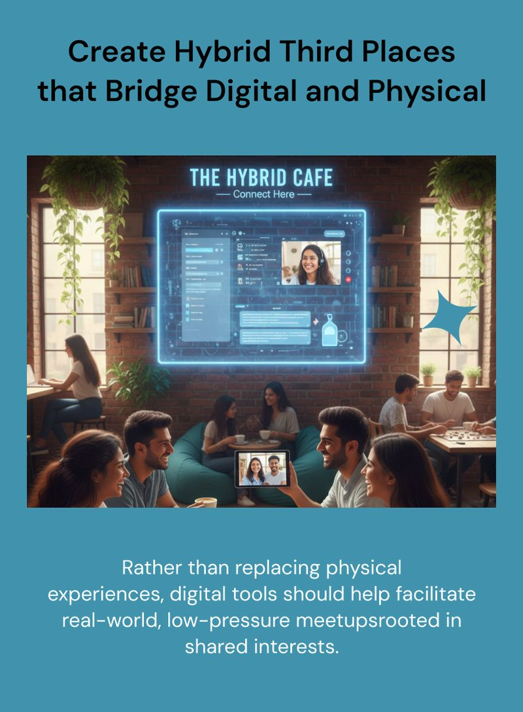
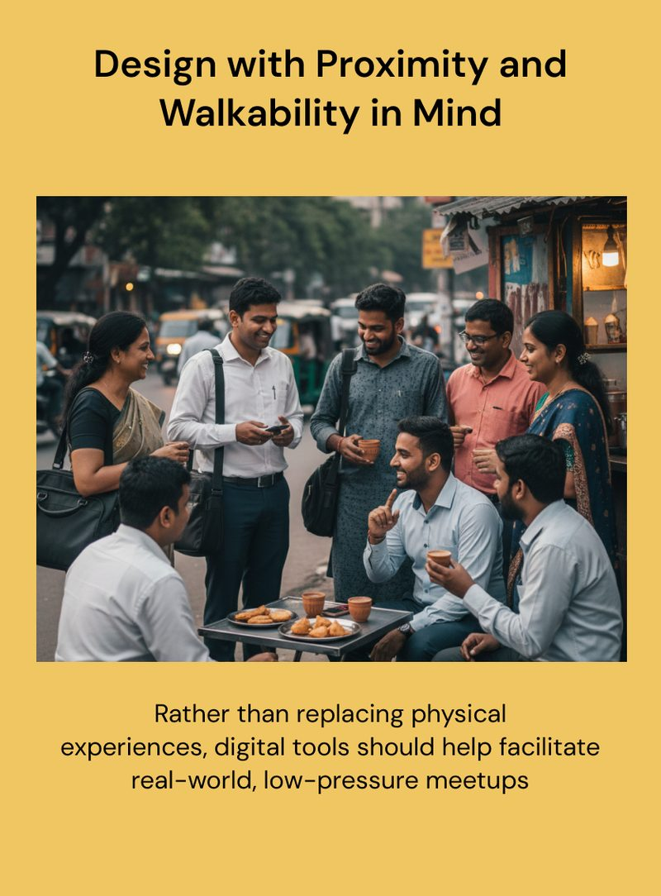
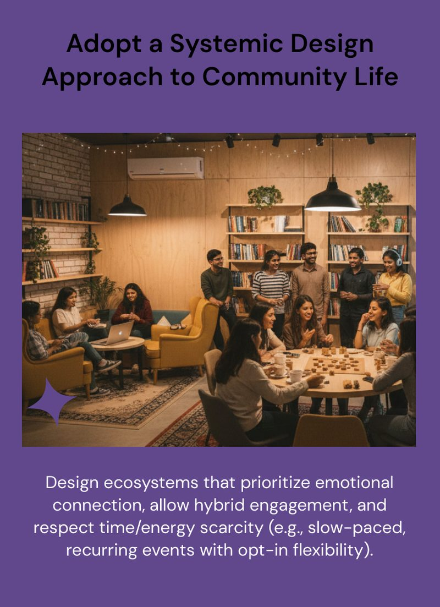

01
Time
Time changes how we socialise
Work, responsibilities, and planning fatigue make spontaneous participation harder.
An academic research project exploring how working adults find connection, belonging, and community as traditional third places evolve.
Cafés
Parks
Group chats
Hobby clubs
What alternatives are working adults switching to as traditional third places decline, and how do they feel about them?
Review existing literature and understand the research gap.
Conduct qualitative interviews with working professionals aged 20–45.
Transcribe interviews and identify meaningful observations and recurring ideas.
Group related codes into themes across the team's interviews.
Translate themes into insights and design opportunities.
Parks, markets, and neighbourhood spaces have traditionally offered places to connect beyond home and work.
As work, responsibilities, and digital habits change, we wanted to understand what people turn to instead.
What makes an alternative community space meaningful, accessible, and worth returning to?
Hobby groups, digital communities, hybrid gatherings
Our study focused on Gen Z and Millennial working professionals aged 20–45 in urban areas.
Within the five-member team, I contributed to the literature review, primary research, data analysis, and writing of the research paper.
Reviewed Third Places in the Era of Virtual Communities to understand how virtual communities relate to traditional third-place theory.
My contributionConducted 3 interviews with working professionals.
My contributionCoded the transcripts of my three interviews, grouped recurring ideas, and developed initial themes from the responses.
My contributionBrought my initial themes into the team's broader analysis, where themes across interviews were combined into the final set.
With the teamWrote Theme 1 and Theme 2 for the final research paper.
My contributionWe moved beyond collecting opinions to identify recurring behaviours, motivations, and tensions across the interviews.
Interview responses and observations
Meaningful words, behaviours, and recurring ideas
Related codes grouped together
Patterns that helped explain participant experiences
Opportunities informed by the findings
Illustrative synthesis example written for this case study. It is not a verbatim participant quote.
Observation
Work and personal responsibilities limit opportunities to socialise.
Related codes
People may still want connection, but participation needs to fit their changing routines.
Work, responsibilities, and planning fatigue make spontaneous participation harder.
People seek communities built around hobbies, passions, learning, and a sense of purpose.
Comfort, familiarity, and shared values can matter more than simply being around more people.
Digital and hybrid spaces offer flexibility, while physical interactions continue to provide presence, spontaneity, and emotional depth.
NoteThese four clusters synthesise the team's broader findings into a concise portfolio narrative. The full research identified eight themes.
People may still want connection, but participation needs to fit their changing routines.
People seek communities built around hobbies, passions, learning, and a sense of purpose.
Comfort, familiarity, and shared values can matter more than simply being around more people.
Digital and hybrid spaces offer flexibility, while physical interactions provide presence, spontaneity, and emotional depth.
These are research-informed design opportunities, not a finished or validated product.





The value of qualitative research comes from finding patterns across conversations, not treating every response as an isolated opinion.
Turning responses into codes helped me organise observations and build a clearer path toward themes.
My initial themes became part of a larger team analysis, showing me how individual perspectives can contribute to a more complete understanding.
Research can move beyond describing people's experiences to identifying opportunities for more meaningful, accessible community design.
Community is not defined by a place alone. It's shaped by the conditions that make people feel connected, comfortable, and willing to return.